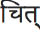

ADIM IX: ENERJİ BEDENLERİNE DOKUNMAK MAGEN
Magen; enerji bedenimizin dış yüzeyidir. Buna bedenin, bir santim kadar ötesinde yer alan enerji bedeni kılıfı da diyebiliriz...
Magen, İbranicede koruma, kalkan veya kılıf anlamına gelir.
Bahsettiğim şeyin “aura” olduğunu düşünsen de kesinlikle aura’dan söz etmiyorum. Aura, magen’in yaydığı ışıktır.
Aura’ya bakmak, ışığa direkt olarak gözleri dikmek demektir ve yoğun ışığa bakarak hiçbir blokaj görmek mümkün değildir. Magen’e bakmaksa doğrudan ışığa değil, ampulün dış yüzeyine dikkat kesilmektir. Dolayısıyla; magen, aura’ya göre çok daha kesin sonuçlar elde etmeni sağlar.
İnsan bedeninin en önemli koruma kalkanı deridir. Deri bütünlüğü bozulduğunda, beden kurumaya başlar. O nedenle büyük yanıklarda hastayı yaşamda tutmak çok zordur. Deri, içeride olanla dışarıda olanı ayırarak bedeni koruma altına alır. Enerji bedeni için de aynı şeyi söylemek mümkündür.
Bazen dışarıda bir otobüs sırasında beklerken arkana birinin yaklaştığı ve aslında sana hiç dokunmadığı halde rahatsızlık hissettiğin olmuştur. Kişi sana temas etmediği halde duyduğun rahatsızlığın nedeni, ikinizin de magen’lerinin çarpışmış olmasından kaynaklanır. Enerji bedenleriniz birbirine değdiğinden, olumlu ya da olumsuz sende de bir his oluşmuştur.